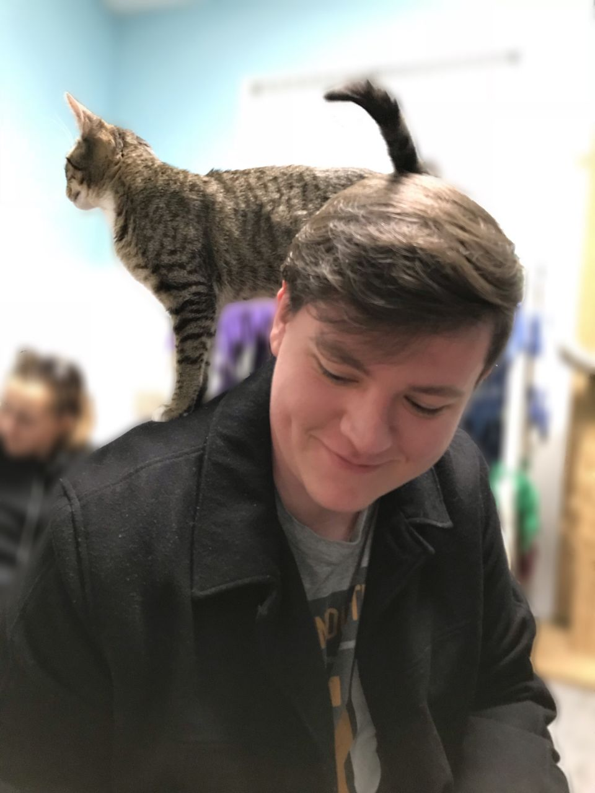

I'm Wyatt, nice to meet you!
I am a software developer living in the metro area of Atlanta, Georgia.
My interests as a developer primarily lie in:
- Solving unique and interesting problems
- Running and maintaining back end services
- Learning and implementing new security measures
I look forward to hearing from you!
About Wyatt
I was originally drawn towards development because of my curiosity around how programs were made. I jumped in head first and fell in love with the unique problems and problem solving skills that are common in the field. Even now, I’m still excited to learn more and develop my mastery over coding and deployments.
When I’m away from the keyboard, I enjoy making music, spending too much time in coffee shops, and playing tabletop games with my friends. I’m always ready to talk shop about music or D&D.